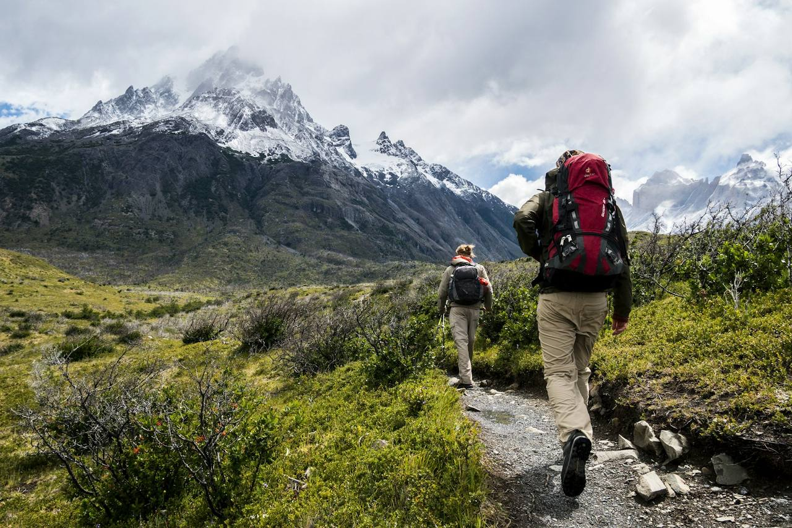

Every guest gets the same one-page pack list a week before their trip. Most people pack it exactly. Some ignore it and bring a hardcover novel. This note exists because every line on that list has a story, and every story starts with someone who didn’t bring the thing.
A pack list is an argument settled in advance. Somebody, usually wearing a nicer jacket than the mountain deserves, once asked why they needed to carry four extra items for a “simple day walk.” Fair question. Here’s the honest answer, item by item, with the receipts.
Merino next to skin, always
Cotton is the one item we actively refuse. Cotton holds water, water conducts heat away from you twenty-five times faster than air, and New Zealand’s bush stays wet long after the rain stops. A cotton t-shirt that dries in four hours is a minor inconvenience in Queenstown and a genuine problem at 1,700 metres with wind. Merino or synthetic, no exceptions, not even for the photograph.

The shell you hope not to use
The pack list says “waterproof shell, top and bottom,” and guests eye the blue sky while packing it. By afternoon, the high country writes its own addenda. Shells in summer are less about rain and more about wind, because a 40 km/h ridge breeze can strip heat faster than any cloudburst, and the difference between a wind shell and a rain shell is usually just marketing. Bring the real one.
Water: the honest two litres
Guests under-pack water more than anything else. The list says two litres for alpine days, and people look at the beautiful creek on the map and do the maths on how heavy water is. The maths is wrong because the creek is often a twenty-minute detour, and because dehydration is a thief: it takes your judgement first and your appetite second, and by the time you’re thirsty enough to argue, the day is already shorter than planned.
The category most people forget
Sun. Not sunscreen-in-the-bag, but sun protection on the body: brimmed hat, glasses, SPF actually applied at the trailhead rather than discovered at lunch. New Zealand’s UV is genuinely different; on a 15°C day with a stiff breeze you can be cold and burning at the same time, which is a sentence no one believes until their first spring day on a schist ridge.
There is no bad weather list, only a shorter conversation with the guide at 6:40 am.
What we carry so you don’t
The group kit stays with the guide: first aid, comms, spare layers, the stove and the emergency shelter. This is the quiet dividend of guided travel: your pack stays small because someone else’s is professional. Your job is the personal layer: warmth, water, sun, and the snack you’ll be smug about at the saddle.
And the novel? Leave it. The valley in the evening light outperforms literature, and the pack is lighter by 400 grams of good intentions.
Fictional concept
This field note is part of a fictional concept by NERODYN. It reflects no real operator’s practices or policies; treat it as general outdoor writing, not advice from a real guide.